2.1 Water
Water is one of the most abundant molecules on our planet: transparent, colourless, odourless and almost everywhere. We drink it, wash in it, swim in it and cook with it, yet we rarely think about it until we run out. Its polarity and its ability to dissolve a wide range of substances make it vital for transporting nutrients and wastes in living things.
It is one of the few substances found in all three states on Earth's surface. Life is believed to have begun in the aqueous solutions of the oceans, and organisms depend on aqueous solutions such as blood and digestive juices. In large amounts water has a faint blue colour, because it absorbs a little red light.
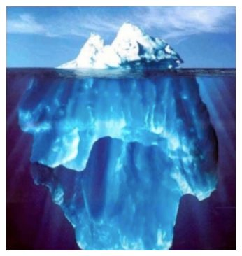
Structure of water
A water molecule is one oxygen atom covalently bonded to two hydrogen atoms. Oxygen has a high electronegativity (its tendency to attract electrons towards itself), so it pulls the shared electrons in the covalent bonds much more strongly than the hydrogen atoms do. The oxygen gains a partial negative charge (δ−) and each hydrogen a partial positive charge (δ+). The molecule is bent (about 104.5°) because of the two lone pairs of electrons on the oxygen.
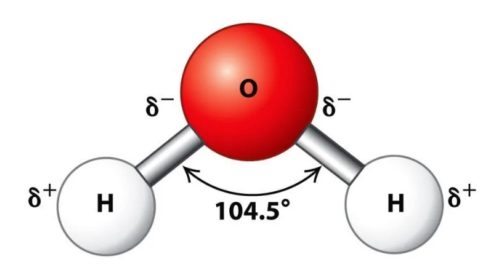
Covalent bonding
In covalent bonding, neighbouring non-metal atoms share electrons so each atom gets a full outer shell. Each shared pair of electrons is one covalent bond. In water, the oxygen shares one pair of electrons with each hydrogen atom: two single covalent bonds.
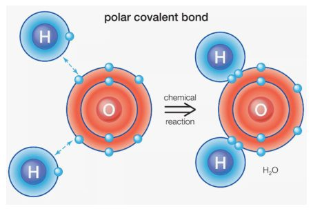
Although the electrons are shared, the oxygen end pulls harder on them and becomes slightly negative, while the hydrogen ends are slightly positive. Covalent molecules with this uneven charge distribution are polar: they have a positive side and a negative side.
Types of covalent bonds: the number of shared pairs decides the number of bonds: a single bond (1 pair, e.g. Cl–Cl), a double bond (2 pairs, e.g. O=O) or a triple bond (3 pairs, e.g. N≡N). Sharing lets each atom reach a stable outer shell like a noble gas. Covalent bonds are also called molecular bonds.
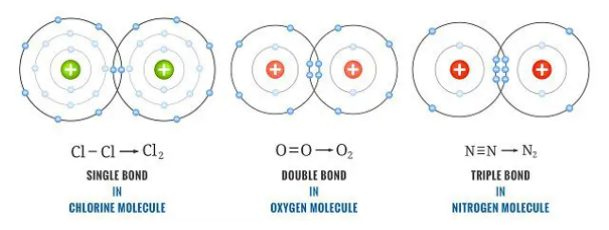
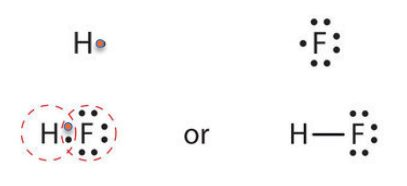
How many covalent bonds does the oxygen atom in a water molecule form?
Oxygen has 6 outer electrons and needs 2 more, so it shares one pair with each of the two hydrogen atoms.
Properties of water
Density as a solid: water boils at 100 °C and freezes at 0 °C. Water is less dense as a solid than as a liquid: as it freezes, hydrogen bonds hold the molecules in a crystal lattice with more space between them than in liquid water. So ice floats. This stops ponds, lakes and oceans freezing solid, so life can continue under the ice.
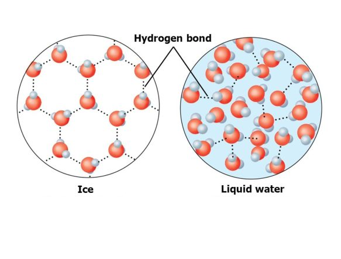
Polarity: the oxygen is slightly negative and the hydrogens slightly positive, so water molecules are strongly dipolar. The δ+ hydrogen of one molecule attracts the δ− oxygen of another: this attraction is called hydrogen bonding (an intermolecular force: between molecules, not inside them).
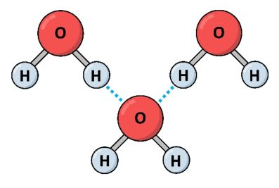
Universal solvent: because water is polar, ions and polar molecules dissolve readily in it. The slightly negative oxygen atoms are attracted to positive ions, and the slightly positive hydrogen atoms to negative ions (and to polar molecules like glucose and amino acids). Large numbers of water molecules weaken the ionic bonds and pull the ions apart, surrounding each one. Water is called the universal solvent.
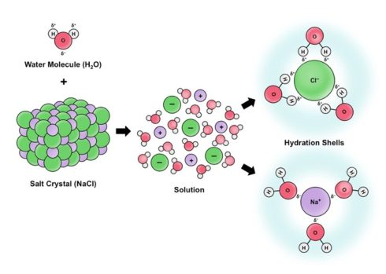
"Like dissolves like": polar water dissolves other polar substances, but it doesn't mix with non-polar substances such as oil.
Cohesion and adhesion: water molecules attract each other strongly (cohesion) because they form hydrogen bonds. Cohesion causes surface tension: a liquid's surface resists breaking under stress. Water also sticks to other substances (adhesion). Together, cohesion and adhesion carry water to the top of trees, against gravity.
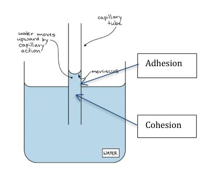
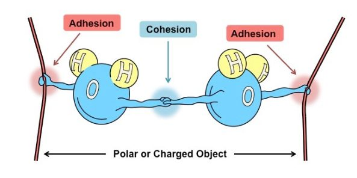
Wetting: molecules at the surface of a droplet are pulled inward, so drops tend to be spherical (in a spacecraft, a floating drop wobbles but stays round). On a solid surface:
- If the attraction between the liquid and the surface is stronger than within the liquid, the drop spreads out and wets the surface: the surface is hydrophilic ("water-loving").
- If the attraction within the liquid is stronger, the liquid stays in small drops: the surface is hydrophobic ("water-fearing").
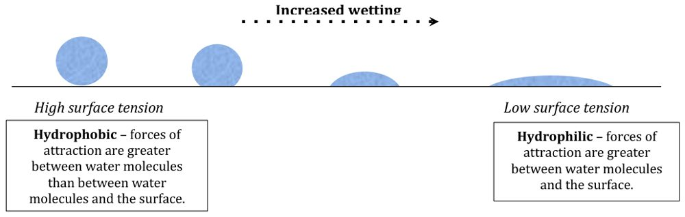
Change in water properties with detergent
Cohesion pulls surface molecules towards the body of the water, so water behaves as if it has a skin. The higher the surface tension, the more water tends to form droplets.
Detergent molecules have a long hydrocarbon (–CH2–) tail, which is hydrophobic and attracted to dirt and grease, and a polar head (e.g. –COOH), which is hydrophilic and attracted to water.
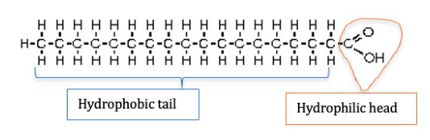
Oil and petrol are hydrocarbons: hydrophobic, so they don't mix with water. When a surfactant such as detergent dissolves in water, the tails are repelled by the water, so detergent particles collect at the surface with their tails in the air. The attraction between these tails is much weaker than the hydrogen bonding between water molecules, so the surface tension is lowered.
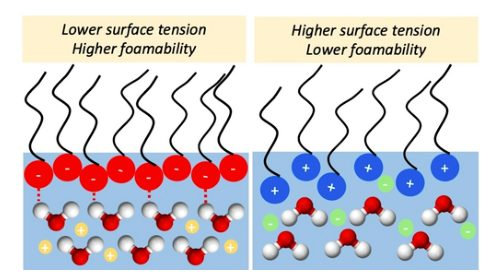
Hydrogen bonds are attractions between water molecules. Detergent lowers surface tension. Oil is non-polar, so it doesn't dissolve in water.
2.2 Practical 1: The Properties of Water
Activity 1: Polarity of water
Run a thin stream of water from a tap. Charge a perspex rod by rubbing it with sheepskin and bring it close to the stream. Then bring a magnet near the stream. Finally, test a second rod rubbed with silk (opposite charge).
- What do you observe, and what can you infer?
- What types of force are involved (electrostatic, magnetic, gravitational, nuclear)?
- If the rod is positive, predict what happens with a negative rod. Explain.
- The stream of water bends towards the charged rod: water molecules are polar, with charged ends.
- Electrostatic forces (and gravity pulling the stream down). The magnet has no effect, so it isn't magnetic.
- The water is still attracted. The water molecules rotate so that their oppositely charged end faces the rod: δ− oxygen towards a positive rod, δ+ hydrogens towards a negative rod.
Activity 2: Wetting of surfaces by various liquids
Using tweezers (to avoid putting finger oil on the surfaces), place small drops of de-ionised water, detergent solution and cooking oil on glass, plastic, aluminium, plastic wrap and waxed paper. Sketch a cross-section of each drop.
- Which surfaces are hydrophilic?
- Why should clean surfaces be used?
- Does detergent solution wet surfaces more or less than water? Explain.
- Typically glass (and clean aluminium): water spreads out on them. Plastic, plastic wrap and waxed paper are hydrophobic.
- Oil or dirt on a surface changes how the liquid interacts with it, so the results would not show the true wetting of the material.
- More: detergent lowers the surface tension (weakens cohesion), so the drops spread out further.
Activity 3 (teacher demonstration)
Freeze 9 mL of water overnight in a 10 mL measuring cylinder, then melt it in hot water and measure the final volume.
Why did the water expand when it froze? Have the molecules changed size, or have the spaces between them changed?
The spaces between the molecules increased. When water freezes, hydrogen bonds hold the molecules in an open crystal lattice, further apart than in liquid water. The molecules themselves don't change size, and when the ice melts the volume returns to about 9 mL.
Activity 4: Detergent and surface tension
- Float a dry needle or pin on water (lower it on a piece of tissue), then add a drop of detergent at the side of the beaker.
- Sprinkle lycopodium powder on water in a trough, then add one drop of detergent in the centre.
- Float a plastic bread-bag clip, then add a drop of detergent in its notch.
- Fill a gas jar to overflowing, scrape the top level, and count how many washers you can add before it overflows. Repeat with detergent solution.
Describe and explain each observation in terms of surface tension.
- The needle sinks: detergent lowers the surface tension, so the "skin" can no longer support it.
- The powder rushes to the edges: the surface tension in the centre drops, so the higher surface tension at the edges pulls the surface (and powder) outward.
- The clip shoots forward, away from the detergent: the surface tension behind it is lowered, so the water in front pulls it along.
- Fewer washers can be added with detergent solution: plain water's high surface tension lets it bulge above the rim before overflowing.
2.3 Test Your Understanding: Water
Why is water important?
Water is essential for life: it is the solvent for the chemical reactions in cells, it transports nutrients and wastes (blood, sap), it helps regulate temperature, it provides habitats, and we need it for drinking, farming, cleaning and industry.
Water is neutral overall: it has partial charges at each end but they balance. "Like dissolves like", so non-polar hexane doesn't dissolve in polar water.
- Explain why water is a polar substance.
- How are cohesion and adhesion alike? How are they different?
- Oxygen is more electronegative than hydrogen, so it pulls the shared electrons towards itself, gaining a δ− charge while the hydrogens become δ+. Because the molecule is bent, the charges don't cancel out, so one side is negative and the other positive.
- Alike: both are attractive forces involving water's polarity (hydrogen bonding). Different: cohesion is the attraction between water molecules; adhesion is the attraction between water and other substances.
Which surface is hydrophilic?
On surface A the drop spreads out flat: the attraction between water and the surface (adhesion) is greater than the attraction between water molecules.
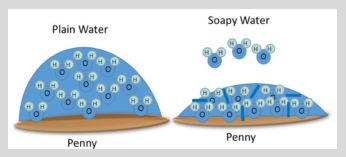
Explain why the penny can hold a larger volume of plain water than soapy water.
Plain water has high surface tension (strong cohesion from hydrogen bonding), so it can bulge up into a tall dome without spilling. Soap lowers the surface tension, so soapy water spreads out and runs off sooner.
- Explain covalent bonding in: a. a water molecule; b. an oxygen molecule; c. a hydrogen chloride molecule. Use Lewis dot diagrams.
- What is the difference between hydrogen bonding and covalent bonding?
- a. H₂O: oxygen (6 valence electrons) shares one pair with each H, forming two single bonds; oxygen keeps 2 lone pairs. b. O₂: each O (6 valence electrons) shares two pairs, forming a double bond (O=O). c. HCl: H and Cl share one pair, a single bond; Cl keeps 3 lone pairs.
- A covalent bond is a strong bond within a molecule, where atoms share a pair of electrons. A hydrogen bond is a weaker attraction between molecules: a δ+ hydrogen on one molecule is attracted to a δ− atom (O, N or F) on another.
- Define hydrophilic and hydrophobic.
- What is a surfactant? How do they help clean dirty clothes?
- Hydrophilic: "water-loving": attracted to (and wet by, or soluble in) water, usually polar. Hydrophobic: "water-fearing": repels water, usually non-polar.
- A surfactant is a substance that lowers surface tension, such as detergent. It helps water wet the fabric, and its hydrophobic tails stick into grease while the hydrophilic heads face the water, so the grease is lifted off in small droplets and washed away.
Water moves up a plant from the roots to the leaves in xylem vessels, at no energy cost to the plant. Explain this using cohesion and adhesion.
As water evaporates from the leaves, cohesion (hydrogen bonds between water molecules) pulls the next molecules up, so a continuous column of water is drawn up the xylem. Adhesion to the walls of the narrow xylem vessels also pulls water upward (capillary action) and supports the column against gravity. The energy comes from evaporation (the Sun), not the plant.